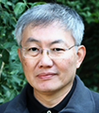

Teachers
The Zendo is led by married couple Vivien and Wah Keong Boey. They
are both sanctioned Zen Teachers of the Sanbo Zen Lineage.
Vivien Loong
Vivien graduated from University of Singapore with a Bachelor in
Business Administration. She has interest in wholeness and
integrative practices (e.g. Jin Shin Jyutsu). In 2003, she was
authorised to be an Assistant Zen Teacher of the Sanbo Zen
Lineage and was certified as a Zen Teacher in 2005.
Dr Wah Keong Boey

Wah Keong is an anaesthetist. He attained his MBBS in the
University of Singapore in 1978 and qualified as an anaesthetist
in 1985. He was made an Assistant Zen Teacher of the Sanbo Zen
Lineage in 2008 and was certified as a Zen Teacher in 2011.